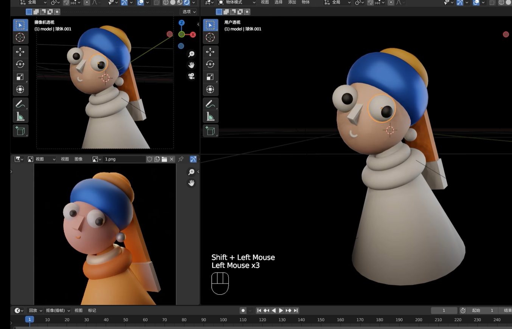

Aim
The primary goal of this project was to master the fundamentals of 3D modeling. It served as an exercise in "Blocking" — practicing the ability to deconstruct complex organic forms into simple geometric primitives (cubes, spheres, cylinders) within Blender.

Reference: Tutorial by Kur Tips
Project Context
This work represents my very first step into 3D design. It is a guided study based on a tutorial by [Tutorial Author Name]. While the concept and composition follow the reference, I rebuilt the model from scratch to familiarize myself with Blender's interface, viewport navigation, and basic transformation tools.